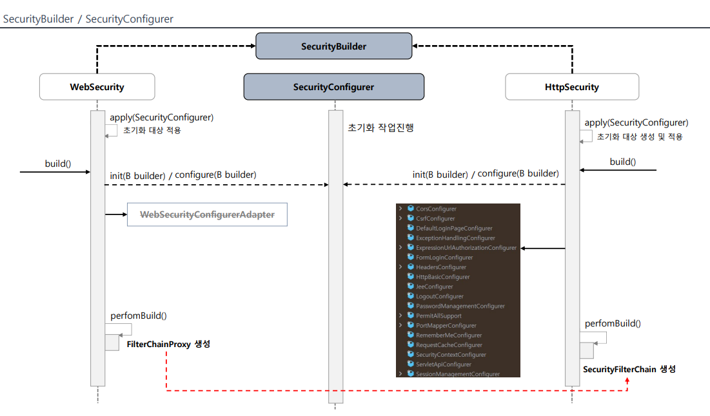

Spring Security(2) - SpringBoot 자동 설정에 의한 초기화 과정
서블릿 기반 어플리케이션에서 Spring Security의 동작과 초기화 과정을 살펴보기 앞서 이해하고 넘어가야 할 부분이 있다.
서블릿 컨테이너와 스프링 Bean
필터 기반의 Spring Security가 Servlet 기반의 어플리케이션으로서 동작하기 위해선 서블릿 컨테이너에서 스프링 빈으로 등록된 클래스들을 알아야 한다.
하지만 서블릿 컨테이너는 스프링이 관리하는 빈을 인식하지 못하는데, DelegatingFilterProxy 를 통해 이러한 문제를 해결하였다.

DelegatingFilterProxy는 내부적으로 Spring Container인 WebApplicationContext를 통해 스프링 빈으로 등록된 Filter들에게 요청 처리를 위임하는 역할을 수행한다.
구체적으로, DelegatingFilterProxy는 필요한 시점에 WebApplicationContext로부터 springSecurityFilterChain이라는 이름으로 등록된 Bean을 받아오며, 이 Bean은 FilterChainProxy이다.
FilterChainProxy는 내부적으로 SecurityFliterChain List를 가지고 있으며, 요청에 따라 적절한 SecurityFilterChain을 선택(by requestMatcher)한다. 그 후 순서에 따라 SecurityFilterChain 필터들의 doFilter 메서드를 호출하는 역할을 수행한다.
Springboot와 자동 설정 및 초기화
Spring Security 의존성만 추가하고 아무런 설정을 하지 않은 채 DelegatingFilterProxy 내부에 브레이크 포인트를 지정해 디버그를 찍어보면 DefaultSecurityFilterChain이 등록되어있고, 그 내부에는 여러 개의 Spring Bean Filter들이 등록되어 있는 것을 볼 수 있다.
스프링은 이렇게 의존성만 추가하더라도 기본적인 Security 설정 및 초기화를 도와주는데, 그 중심에는 SecurityBuilder와 SecurityConfigruer가 있다.

Custom 설정이 없다는 가정 하에 진행 과정을 설명하자면,
어플리케이션을 구동하게 되면 시큐리티 - MVC Integration 관련 설정과 Csrf설정, 그리고 DelegatingFilterProxy를 등록 하는 등의 초기화 과정이 수행된다. 그 과정에서 HttpSecurityConfiguration이라는 Spring 제공 설정 클래스가 생성되는데, 여기서 기본적인 SecurityFilterChain을 담은 HttpSecurity를 Bean으로 등록한다. 이렇게 기본적인 설정이 된 HttpSecurity으로부터 SecurityFilterChain을 WebSecurityConfiguration에서 List형태로 주입받아 최종적으로 FilterChainProxy에 생성자에게 전달된다.
SecurityFilterChain Bean을 등록하는 과정에서 각 Filter들을 생성하고 Configurer의 init, configure 메서드를 호출하며 초기화 작업이 이루어진다.(WebSecurityConfiguration의 springSecurityFilterChain 메서드와 AbstractConfiguredSecurityBuilder의 doBuild 메서드 참고)
CustomSecurityConfigurer 등록
다음은 Custom한 SecurityConfigurer를 등록하는 간략한 설정이다.
1
2
3
4
5
6
7
8
9
10
11
12
13
14
15
16
17
18
19
20
21
22
23
24
25
26
27
28
29
30
31
32
33
34
35
36
37
38
39
40
41
42
43
44
45
46
@EnableWebSecurity
public class SecurityConfig {
@Bean
SecurityFilterChain securityFilterChain(HttpSecurity http) throws Exception {
// ...
http.apply(new CustomSecurityConfigurer().setFlag(true));
// ...
return http.build();
}
}
public class CustomSecurityConfigurer extends AbstractHttpConfigurer<CustomSecurityConfigurer, HttpSecurity> {
private boolean isSecure;
@Override
public void init(HttpSecurity builder) throws Exception {
super.init(builder);
System.out.println("init method started..");
}
@Override
public void configure(HttpSecurity builder) throws Exception {
super.configure(builder);
System.out.println("configure method started..");
if(isSecure){
System.out.println("https is required");
}else{
System.out.println("https is optional");
}
}
public CustomSecurityConfigurer setFlag(boolean isSecure){
this.isSecure = isSecure;
return this;
}
public CustomSecurityConfigurer setFlag2(boolean isSecure){
this.isSecure = isSecure;
return this;
}
}
간단하게 등록 여부를 확인하기 위한 메시지 출력을 init, configure 오버라이드 메서드에 추가하였다. 이처럼 SecurityConfigurer의 경우 init, configure 메서드를 오버라이드하여 filter 등록 및 초기화를 customize할 수 있다.